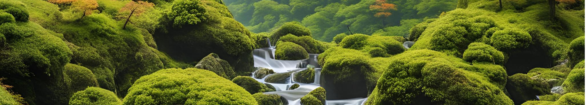
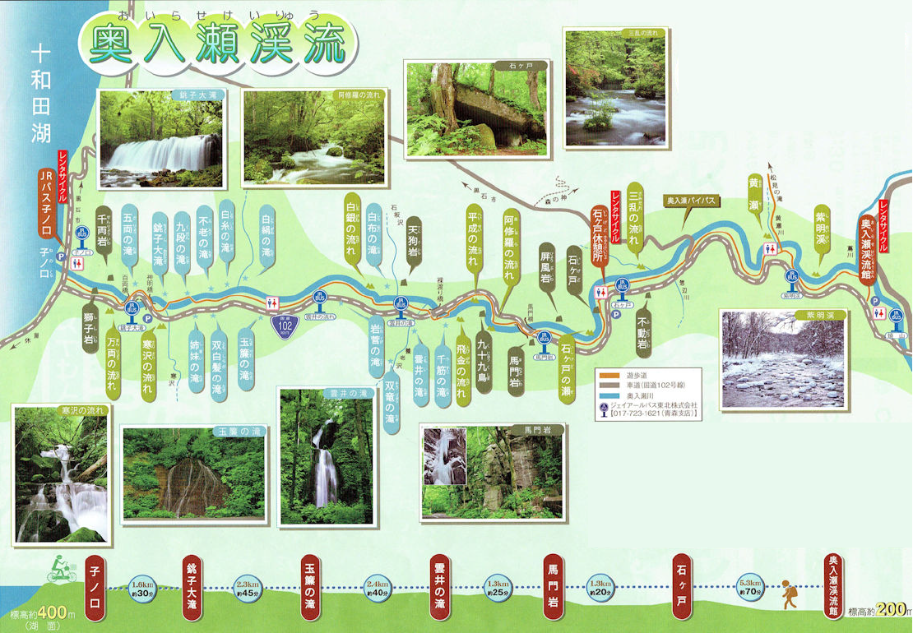
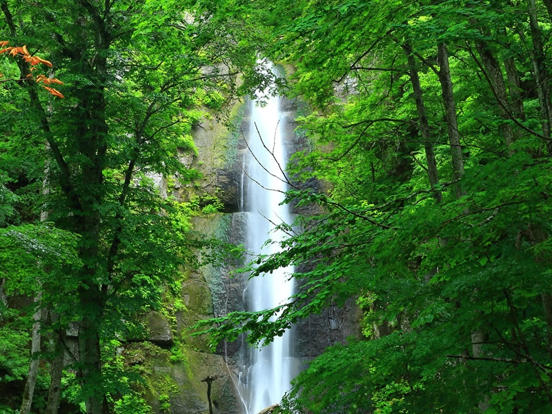
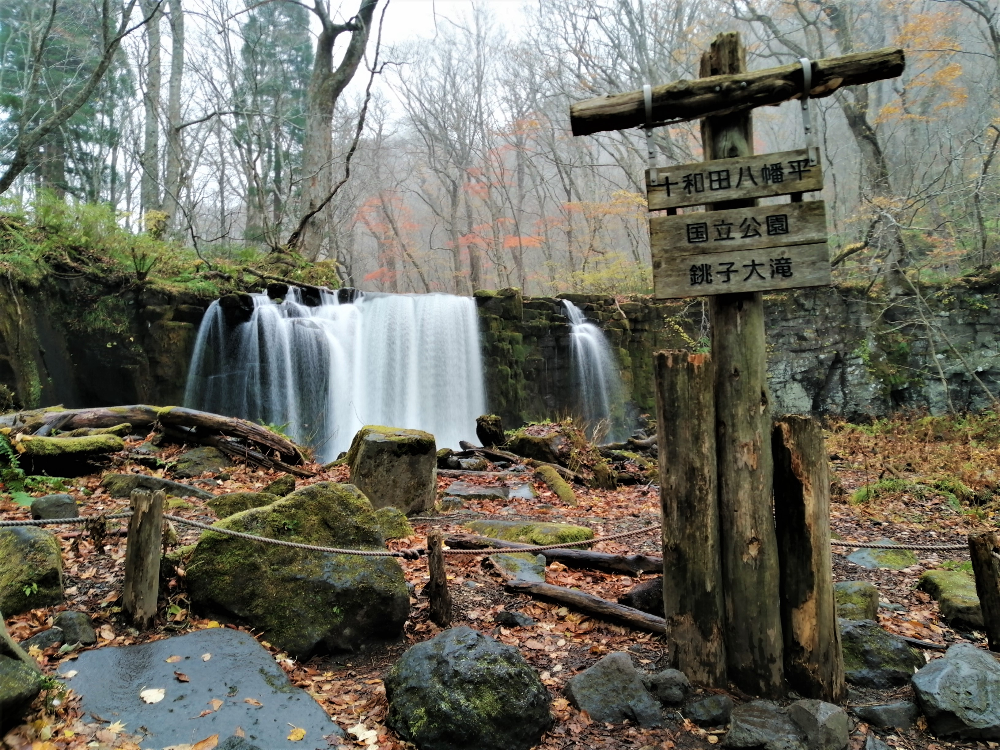
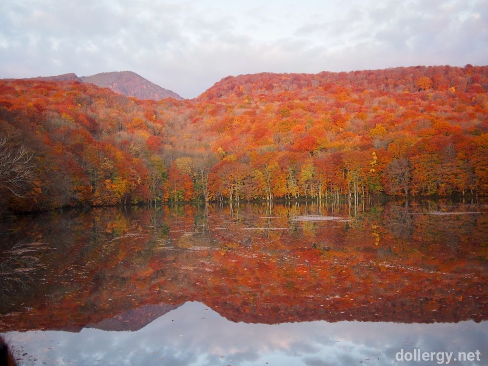
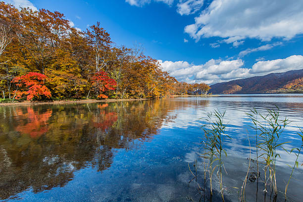

青森
青森氣候特徵
青森縣位於日本本州最北端，三面環海，擁有豐富多樣的氣候特徵。由於地理位置偏北，青森的四季分明，每個季節都有其獨特的魅力。
-5℃
冬季平均低溫
25℃
夏季平均高溫
1400mm
年均降水量
四季氣候特點
春季（3月-5月）： 3月仍寒冷有雪，4月開始回暖，櫻花通常在4月下旬至5月上旬盛開，是著名的賞櫻勝地。
夏季（6月-8月）： 涼爽舒適，平均氣溫約20-25℃，是避暑的理想之地。夏季有豐富的祭典活動，如著名的青森睡魔祭。
秋季（9月-11月）： 氣溫逐漸下降，10月是賞楓的最佳時期，奧入瀨溪流和十和田湖的楓景令人驚嘆。
冬季（12月-2月）： 寒冷多雪，日本海側降雪量極大，山區積雪可達數米深，是滑雪和溫泉的熱門季節。
旅遊景點推介
>精選相片
奧入瀨溪流
奧入瀨溪流是一條全長約14公里的溪流，位於青森縣十和田市，屬於十和田八幡平國立公園。 沿著溪流走，途中會看到許多瀑布景點，匯集了各種瀑布及水流，故又被稱為「瀑布街道」，因此吸引了眾多觀光客及喜好大自然攝影的人。 奧入瀨溪流是日本絕佳的賞楓景點之一，且被指定為國家特別名勝與天然紀念物，是日本名景勝地的代表之一。按此放大
這是奧入瀨溪流的景點地圖，由"子之口"到"十和田湖"，詳盡顯示了各個瀑布的地點及名稱。以下是我的誠意推介:
雲井瀑布
位於青森縣八甲田山系的雲井瀑布，是一處隱秘的瀑布，高約30公尺。周圍被茂密的森林環繞，水流如絲綢般傾瀉而下，宛如仙境。冬季時，瀑布結冰形成冰柱，成為攀冰愛好者的勝地。秋季則因紅葉襯托更顯壯麗，是攝影師的絕佳取景地。白糸瀑布
白糸瀑布位於青森縣西目屋村，因水流如白色絲線而得名。瀑布寬約20公尺，高約7公尺，雖規模不大，但景致秀麗。周邊設有步道，遊客可近距離欣賞清澈水流與綠意盎然的自然風光，夏季尤其涼爽宜人，是避暑的好去處。
銚子大瀑布
銚子大瀑布坐落於青森縣深浦町，高達30公尺，是縣內著名的瀑布之一。水流氣勢磅礡，夏季水量充沛時更顯壯觀。周邊森林茂密，秋季紅葉與瀑布相映成趣，吸引眾多遊客前來賞景。附近還有溫泉設施，適合放鬆身心。
銚子大瀑布初雪影片
蔦沼
蔦沼位於青森縣十和田八幡平國立公園的深處，與鏡沼、月沼、瓢簞沼、菅沼、長沼及赤沼合稱「蔦之七沼」。 蔦沼四圍環繞著原生櫸木林，隨著季節變遷有著不同的繽紛景致，如五月的綠草如茵和秋天迷人的秋葉色調，如詩如畫的風光令遊客為之著迷。圖片為著名的"蔦沼朝燒"。
十和田湖
十和田湖橫跨青森與秋田兩縣，是日本著名的火山湖。湖面湛藍清澈，周邊環繞著原始森林與懸崖，景色壯麗。遊客可乘船遊湖，或沿著湖畔步道漫步，欣賞四季變換的風光。春季櫻花、秋季紅葉尤其迷人，是東北地區的必訪景點。
行程建議
青森大自然之旅
📅行程建議（3天2夜）🌲第一天：奧入瀨溪流與十和田湖
上午
先由成田機場前往東京駅，
再乘坐新幹線(E5隼號)前往八戶駅，
跟進在八戶站租車出發，
抵達「奧入瀨溪流」入口 - 石戶，
再駛至阿修羅之流，下車步行。
推薦路線：阿修羅之流→雲井之滝→白糸之滝→銚子大滝→十和田湖
中午
十和田胡畔品嚐午餐
下午
乘坐觀光船，暢遊十和田湖。
遊覽：乙女像、十和田神社
最後折返回阿修羅之流，駕車前往酒店。
🌲第二天：白神山地與津輕半島
上午
前往白神山地（車程約1.5小時）
「暗門瀑布」路線（初級者推薦，往返約2小時）
世界遺產級山毛櫸原始林體驗
中午
十二湖「青池」周邊餐廳（品嘗津輕海鮮丼）
下午
十二湖散策（推薦「雞頭場之池」路線）
駕車前往津輕半島（車程約2小時）
龍飛崎（本州最北端，欣賞夕陽）
🌲第三天：八甲田山與市區文化
上午
前往八甲田山（車程約1小時）
搭乘八甲田纜車（夏季新綠/秋季紅葉）
山頂散步（毛無岱濕原路線）
中午
返回青森市區
「古川市場」海鮮丼自助（NOKKE丼）
下午
青森縣立美術館（奈良美智青森犬）
A-FACTORY蘋果酒品嘗
青森站周邊購物（蘋果製品、蒜味醬油）
季節建議
春（5月）：奧入瀨新綠
夏（7-8月）：十和田湖煙火大會
秋（10月中）：八甲田紅葉
冬（1-2月）：八甲田樹冰
🚗 交通建議 自駕最方便（青森站有多家租車公司）
或購買「JR東日本鐵路周遊券（東北地區）」+ 部分巴士
🍜必吃美食
青森蘋果派（A-FACTORY）
津輕海鮮丼（大間鮪魚）
味噌咖哩牛奶拉麵
蘋果酒（シードル）
其他網上行程建議(只供參考!)


- ©2025 Copyright by Raymond Chau -